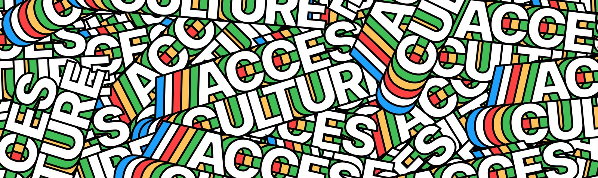

La Culture de ScrumLand
Alliant modernité et charme historique, la culture mondialement connue de ScrumLand est une attraction à part entière. Vous trouverez ci-dessous nos coutumes qui font de nous de véritables ScrumLandegois.
La fameuse Danse de l'Agilite, connue de tous les habitants de l'héxagone, trouve ses origines à la fin du Moyen-Âge, au tournant du 14ème siècle, où cette danse était pratiquée pour chasser les mauvais esprits qui, selon une rumeur, hantaient les champs des paysans de la région. Son rythme effréné et son air guilleret contribuèrent à sa popularité grandissante, atteignant son paroxisme en 1666 quand même la noblesse royale française se mit à la danser régulièrement ! Cette danse s'est retransmise de génération en génération, sans jamais changer - du moins jusqu'en 1998 où, afin de la remettre au goût du jour, les principes de l'agilité y ont été intégrés.
Elu grand crû le plus cultissime d'Europe pendant 20 années consécutives, le Bienvenues-Bâtard-Montrachet de ScrumLand est une véritable merveille du monde en bouteille ! Délectez-vous de son goût unique au monde, alliant arômes fruités, douceur et sapidité dans un mélange que nul n'a réussi à reproduire. Peu importe si vous êtes un grand amateur de vin ou un buveur de la petite semaine : vous ne trouverez un vin meilleur nul part dans le monde ! Ce vin possède aussi des effets thérapeutiques hors de son bon goût : il a été scientifiquement démontré que prendre un bain de Bienvenues-Bâtard-Montrachet tous les jours fait rajeunir votre peau - ce qui lui vaut son surnom de "Fontaine de Jouvence."